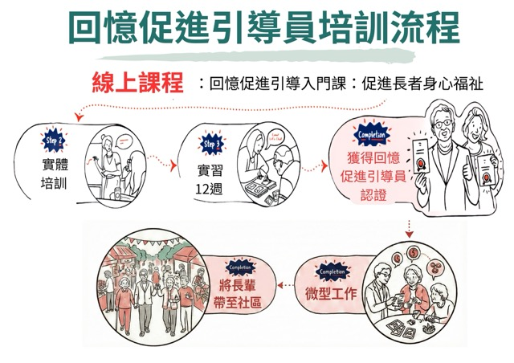

我們關注的情況
認知障礙、抑鬱、孤獨感及社交退縮，都是不少長者與照顧者正在面對的挑戰。
計劃希望透過訓練與陪伴，培育一群懂得傾聽、願意陪伴的回憶引導員，讓回憶的力量在社區中生根發芽。
本計劃關注香港高齡化下長者在認知、情緒及社交層面的需要，期望透過回憶引導活動，把生命故事、陪伴互動與社區支援連結起來，建立更有溫度的服務模式。
認知障礙、抑鬱、孤獨感及社交退縮，都是不少長者與照顧者正在面對的挑戰。
透過回憶活動、互動體驗、回憶引導培訓與服務，建立可持續的社區參與模式。
長者在認知能力、生活質素及社交互動方面有正面改變，照顧者亦在參與過程中獲得成長與支持。
了解回憶引導對長者與帶領者雙方在認知、社交及生活感受上的影響，為未來社區服務提供更多實證基礎。
回憶引導培訓課程對象為長者或照顧者。課程將幫助參加者理解回憶引導的理念、帶領技巧及實務應用，並鼓勵他們在社區中成為願意傾聽、願意陪伴的回憶引導員。

完成必要的線上課程以建立懷舊與回憶引導的基礎知識，涵蓋引導原則、5大核心素養與能力 (5 RECs) 及 4Ws 活動設計方法。
參加為期兩天的實體培訓課程，透過角色扮演與模擬懷舊情境，獲得實踐經驗與有效溝通技巧。
獲得由新加坡社科大學發出的「回憶引導員證書」。
提供微工作機會，讓參與者在活中累積經驗，並增強社交連結。
這裡適合持續更新培訓報名、中心合作、VR 服務與社區活動安排。
面向長者或照顧者，培養回憶引導員，讓參加者成為社區陪伴與帶領的一分子。
歡迎長者中心、院舍及社區單位與我們合作，由計劃安排回憶引導員到點提供服務。
以 VR 體驗結合回憶引導，把更具沉浸感的互動帶到中心或院舍，讓長者在熟悉感與新鮮感之間打開交流空間。
2025年至今
已舉辦回憶引導員培訓課程:2場
完成培訓的義工: 60+
受惠的長者: 240+
VR回憶引導活動受惠的長者: 20+
可參與回憶活動、VR 體驗及社區小組，增加互動與參與感。
可透過課程與活動成為回憶引導員，發展新的陪伴方式。
可邀請計劃到點提供回憶引導服務或 VR 活動，豐富機構服務內容。
可共同策劃活動、分享資源、招募參加者及擴大社區網絡。
我們希望持續推動回憶引導在社區落地，逐步擴展服務網絡，培育更多回憶引導員，並為長者帶來更貼近需要的支援。若您對計劃感興趣，或有意成為合作夥伴，歡迎隨時與我們接洽。
{kind=link}
{kind=link}